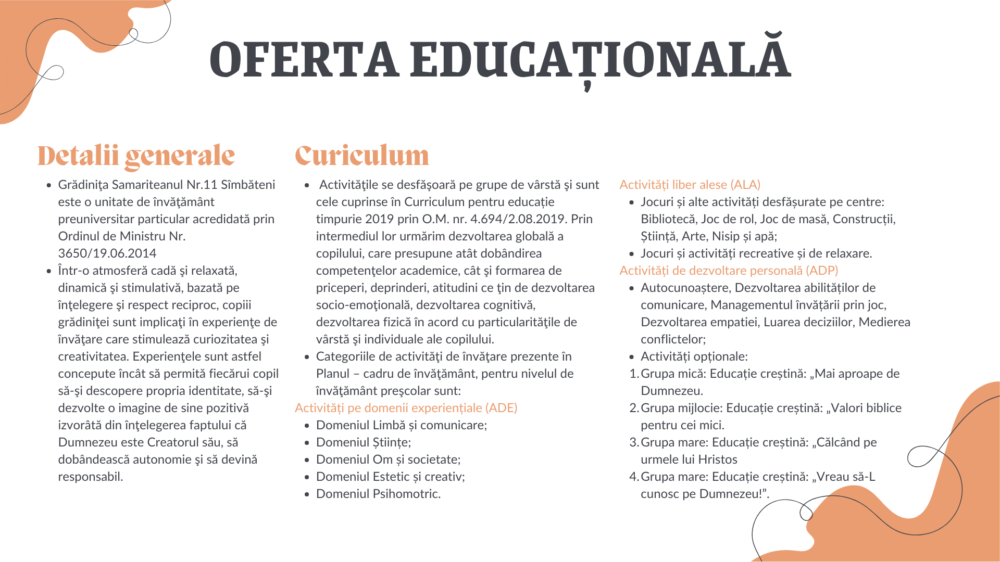
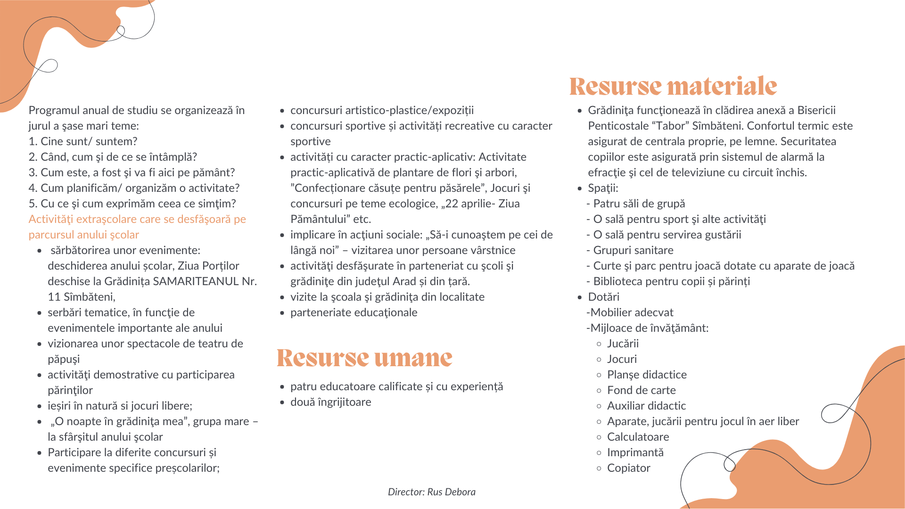
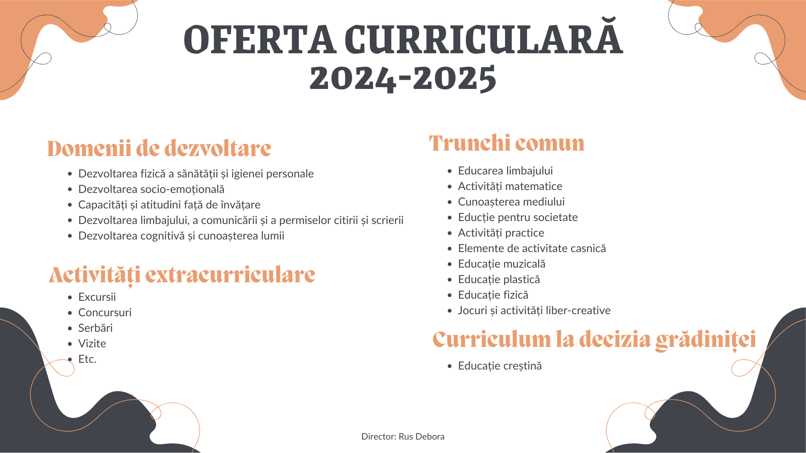
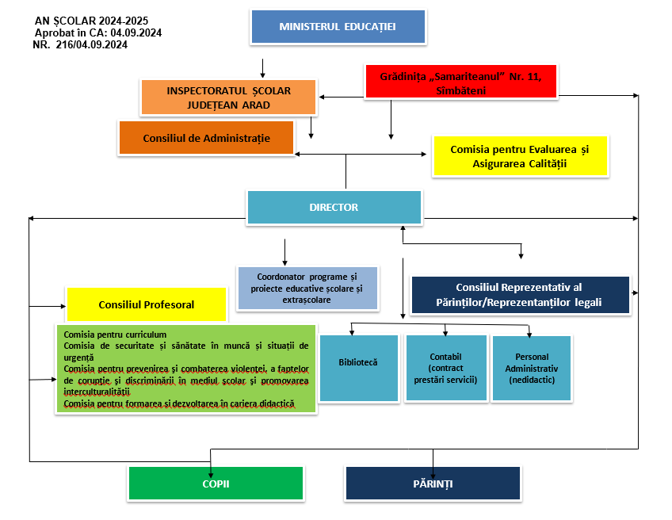

DESPRE NOI
Grădinița Samariteanul Sâmbăteni
Grădinița „Samariteanul” Nr. 11 din Sîmbăteni, județul Arad, este o instituție de învățământ particulară cu program normal, funcționând în spațiul oferit de Biserica Penticostală „Tabor” din Sâmbăteni. Grădinița și-a "Deschis porțile" la 1 noiembrie 1993 la inițiativa bisericii, prin Asociația Creștină de Caritate „Samariteanul” Arad, cu sprijinul partenerilor din Germania – „Hoffnung für eine neue Generation”.
Evoluție și Acreditări
>> 1994 - Aviz de funcționare emis de Ministerul Învățăturii
>> 2001 - Aviz de luare la cunoștință pentru funcționarea grădiniței emis de MEC, ISJ Arad
>> 2002 - Autorizație de încredere
>> 2014 - Acreditare
>> 2019 - Atestatul privind calitatea educației emis de MEN
Misiune și Valori
Grădinița promovează educația creștină, bazată pe principii biblice, oferind un mediu sigur și prietenos, unde fiecare copil este acceptat și îndrumat spre dezvoltare armonioasă. Se pune accent pe respect, stimă de sine și integrarea copilului în familie, biserică și comunitate.
Din 2004, este căutată de familii din Sîmbăteni și localitățile învecinate: Păuliș, Ghioroc, Cuvin, Cicir, Mândruloc și Vladimirescu.
Deviza noastră: „Suntem în slujba copilului”, ghidându-l spre cunoașterea lui Dumnezeu și formarea lui ca un cetățean valoros al societății.
Echipa Gradiniței
An școlar 2024-2025
>> Rus Debora – Director, Educatoare la grupa mare „Păsărele”
>> Sigheti Denisa Liliana – Educatoare la grupa mare „Ursuleții”
>> Coman Emanuela - Educatoare la grupa mijlocie “Îngerașii”
>> Babuția Theo-Hadasa - Educatoare la grupa mică „Pinguinilor”
>> Ghiț Naomi Nadia – Îngrijitoare copii
>> Purtan Celine Miriam - Îngrijitoare copii
>> 3 holuri cu vestiar
>> 4 săli de grupă
>> 1 sală mulțifuncțională
>> 5 grupuri sanitare
>> Sală de mese
>> Birou educativ/sală profesorală
>> Bibliotecă pentru copii, cadre didactice și părinți
>> Spațiu de depozitare a materialelor didactice și jucăriilor
>> Cabinet pentru consiliere
>> Spațiu pentru depozitarea aparatelor de joc afară
>> Parc
>> Curte




1. VIZIUNEA
Creşterea şi educarea copiilor în spiritul principiilor biblice, cu impact în prezent şi în viitor.
2. MISIUNEA
>> Dezvoltarea liberă, integrală şi armonioasă a personalităţii copilului, în funcţie de ritmul popriu şi de
trebuinţele sale, sprijinind formarea autonomă şi creativă a acestuia;
>> Dezvoltarea capacităţii de a interacţiona cu alţi copii şi cu adulţii, cu mediul pentru a dobândi
cunoştinţe, priceperi, atitudini şi conduite noi. Încurajarea încercărilor, experimentărilor,
exerciţiilor, explorărilor ca experienţe autonome de învăţare;
>> Sprijinirea copilului în cunoaşterea lui Dumnezeu;
>> Sprijinirea copilului în descoperirea propriei identităţi, a autonomiei şi în dezvoltarea unei imagini
de sine pozitive;
3. ȚINTE STRATEGICE
1. Asigurarea condițiilor materiale, umane și pedagogice pentru dezvoltarea unui mediu incluziv care să
asigure dezvoltarea plenară și liberă a fiecărui copil, indiferent de condiția socială, culturală, etnică, de
sex, psihologică, de capacitate.
2. Creşterea calităţii serviciilor oferite de grădiniţă, beneficiarilor direcţi şi indirecţi, prin abordarea unui
management activ, participativ care să producă plus valoare.
3. Utilizarea eficientă a resurselor prin practicarea unui management financiar performant, corelat cu
politicile, strategiile şi planurile de dezvoltare instituţională.

>> Asociația Hoffung fur eine neue generation, Germania
>> Biserica Penticostală Tabor, Sâmbăteni
>> Poliția Locală Păuliș
>> Primăria comunei Păuliș
>> Asociaţia Internaţională a Şolilor Creştine (ACSI)
>> Teatrul de animație Piticot
>> Familia
>> Cabinet medical individual Dr. Ille Violeta
>> Școala Gimnazială „Sabin Manuilă”- Sâmbăteni
>> Școala primară „Primii pași” Timișoara
>> Școala Primară „Samuel”, Deva